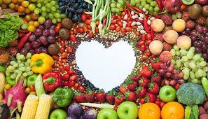
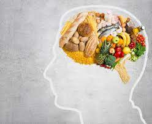

Home
Physical Health
Mental Health
p u l l
Physical Health: Nutrition & Diet
How is good nutrition related to physical health?
Good nutrition, physical activity and a healthy body weight are essential parts of a person's overall health and well-being. Together, these can help decrease a person's risk of developing serious health conditions, such as high blood pressure, high cholestrol, diabetes, heart diseases, stroke and cancer.

What are some foods which are good for my physical health?
Fat free and low-fat dairy products, such as low-fat yoghurt, cheese and milk. Proties foods such as lean meat, fish, poultry without skin, beans and peas. Whole-grain foods such as whole-wheat bread, oatmeal and brown rice. Other grain foods include pasta, cereal, bagels, bread, tortillas, couscous and crackers.
What is a balanced diet chart?

A healthy balanced diet includes the following:
- Friuts, vegetables, legumes (e.g. lentils and beans), nuts and whole grains (e.g. unprocessed maize, millet, oats, wheat and brown rice).
- At least 400g (i.e. five portions) of fruit and vegetables per day, excluding potatoes, sweet potatoes, cassava and other starchy roots.
- Less than 10% of total energy intake from free sugars, which is equivalent to 50 g (or about 12 level teaspoons) for a person of healthy body weight consuming about 2000 calories per day, but ideally is less than 5% of total energy intake for additional health benefits. Free sugars are all sugars added to foods or drinks by the manufacturer, cook or consumer, as well as sugars naturally present in honey, syrups, fruit juices and fruit juice concentrates.
- Less than 30% of total energy intake from fats. Unsaturated fats (found in fish, avocado and nuts, and in sunflower, soybean, canola and olive oils) are preferable to saturated fats (found in fatty meat, butter, palm and coconut oil, cream, cheese, ghee and lard) and trans-fats of all kinds, including both industrially-produced trans-fats (found in baked and fried foods, and pre-packaged snacks and foods, such as frozen pizza, pies, cookies, biscuits, wafers, and cooking oils and spreads) and ruminant trans-fats (found in meat and dairy foods from ruminant animals, such as cows, sheep, goats and camels). It is suggested that the intake of saturated fats be reduced to less than 10% of total energy intake and trans-fats to less than 1% of total energy intake. In particular, industrially-produced trans-fats are not part of a healthy diet and should be avoided.
- Less than 5 g of salt (equivalent to about one teaspoon) per day. Salt should be iodized.
What are some foods that I should avoid?
Some items that you should avoid are:
- Bacon, sausages and other processed meat products
- Potato chips and other processed, packaged snacks
- Dessert
- Too much protien
- Fast Food
- Energy Drinks
- Added Salts
- Coconut oil